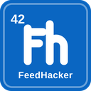

Mute the noise in your LinkedIn feed — AI slop, promoted posts, engagement bait, hiring, and more.
Pinning is optional — you can unpin it the same way whenever you like.
FeedHacker starts with AI slop filtering on. Open the popup (the toolbar icon) to mute or solo other post types, or head to the settings for details, activity, and how detection works.
Questions? Open an issue on GitHub ↗
MAX Research Collective